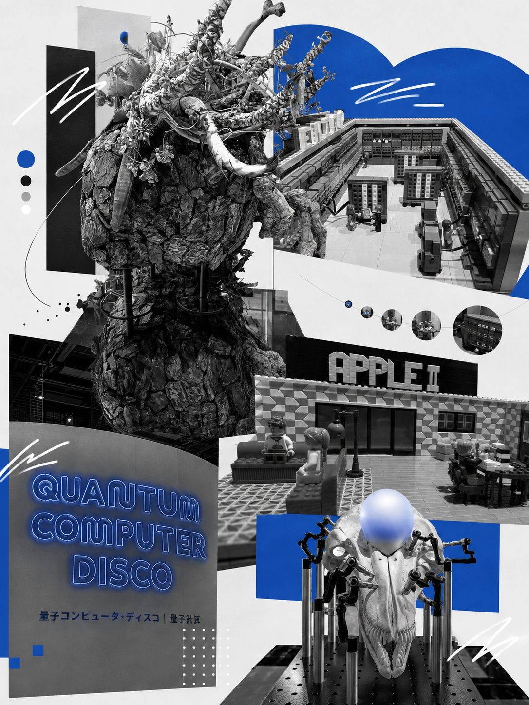
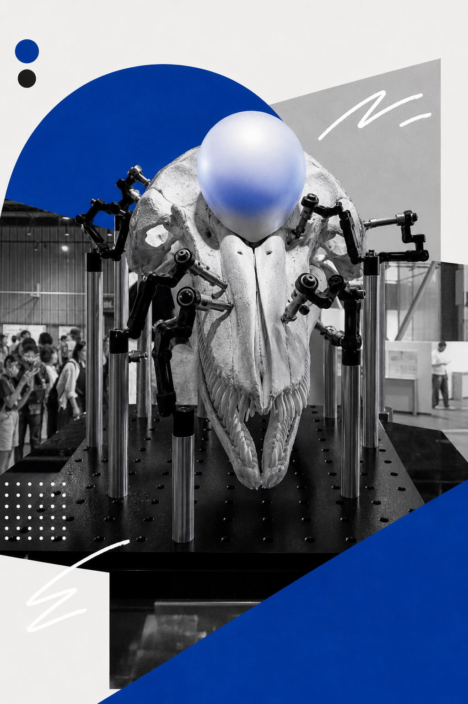
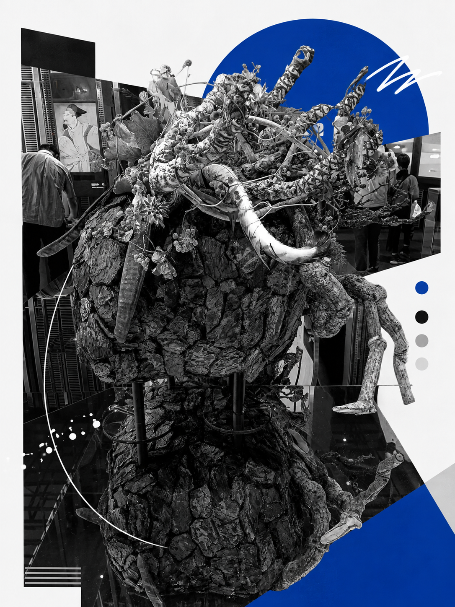
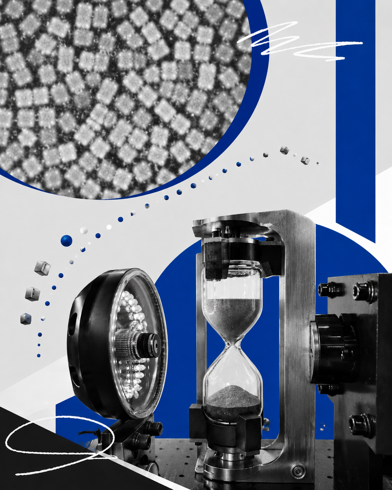
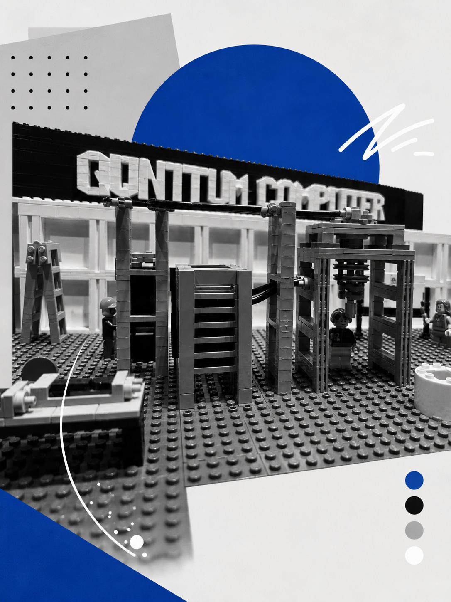

日本科学未来館 見学レポート
01 / 13
未来の技術と
私たちの暮らし
日本科学未来館を訪ねて

未来と生活
発表
タマン ・ アセラ ・ アジヤイ ・ シュゲンサク
アウトライン
02 / 13
本日の流れ
01
03〜07
展示紹介
未来館で見たもの
02
08
過去
コンピューターの発展
03
09
現在
見る・認識する
04
10
未来
どこでも計算
05
11
世界
3つの国の現状
06
12
私たちの考え
技術と暮らし
02 / 13
本日の流れ
展示紹介
03 / 13
日本科学未来館で見たもの
コンピューターは、これからどこへ向かうのか？
イルカの脳
自然の情報処理
自然と計算
計算機と自然の関係
塵の中にも計算は宿る
ごく小さな計算機
量子コンピューター
あたらしい計算方法
03 / 13
展示紹介 — 未来館で見たもの

展示詳細 01
イルカの脳と
自然の情報処理
自然の情報処理
イルカの脳
研究のヒント
「自然から学ぶコンピューター」
— 日本科学未来館
04 / 13
展示詳細 — イルカの脳

展示詳細 02
自然と
計算の関係
計算で理解
自然界のしくみ
境界が曖昧
「計算は自然の言語」
— 未来館 展示より
05 / 13
展示詳細 — 自然と計算

展示詳細 03
塵の中にも
計算は宿る
粒子ほど小さく
無数のセンサー
意識しない計算
「塵の中にも計算は宿る」
— 未来館 展示より
06 / 13
展示詳細 — 塵の中にも計算は宿る

展示詳細 04
量子
コンピューター
全く違う原理
高速に解く
医療・材料
「計算の常識が変わる」
— 未来館 展示より
07 / 13
展示詳細 — 量子コンピューター
過去 — コンピューターは小さくなってきた
08 / 13
大きな機械から手のひらの機械へ
01
大型コンピューター
1940〜1960年代
部屋ほどの大きさで、とても高価な機械だった
→
02
パソコン
1970〜1980年代
技術が発展し、家庭に広がった
→
03
スマートフォン
2000年代 —
いつでも持ち歩ける機械になった
08 / 13
過去 — コンピューターの発展
今 — 計算だけではない
09 / 13
コンピューターは「計算」だけではない
01
見る
画像や映像を
認識する
認識する
02
認識する
現実の世界を
理解する
理解する
03
感じる
センサーで環境を
感知する
感知する
04
判断する
データから
意思決定する
意思決定する
09 / 13
今 — 現在の技術
10年後 — 未来の方向
10 / 13
10年後、コンピューターはどうなる？
0
1
0
小さくなる
「塵の中にも計算は宿る」— 日本科学未来館展示より
コンピューター
→
チップ
→
センサー
→
塵
1
あたらしい計算
量子コンピューター— 現在は研究段階
医療
あたらしい材料
研究
「計算する場所」と「計算する方法」が、変わる
10 / 13
10年後 — 未来のコンピューター
各国の現状 — 世界の技術
11 / 13
3つの国、3つの現状
ASIA
01
中国
人工知能
自動運転
ロボット
量子技術
02
ネパール
モバイル決済
オンライン教育
農業テクノロジー
03
カザフスタン
デジタル政府
スマートシティ
宇宙・科学
11 / 13
各国の現状 — 3つの国
結論 — 私たちの考え
12 / 13
技術は生活の一部になる
01
進化
大きな機械 → 生活の中 → 意識しない存在
コンピューターはどんどん小さくなり、私たちの周りに溶け込んでいく
02
融和
便利で 自然な存在
技術は単なる道具ではなく、生活と社会の一部になる
03
責任
発展させるだけでは不十分
技術をどう使うかを考えることも大切である
未来の技術と私たちの暮らしを考える
12 / 13
結論 — 技術と暮らし
ありがとうございました
未来の技術と私たちの暮らし
タマン ・ アセラ ・ アジヤイ ・ シュゲンサク
13 / 13
ありがとう